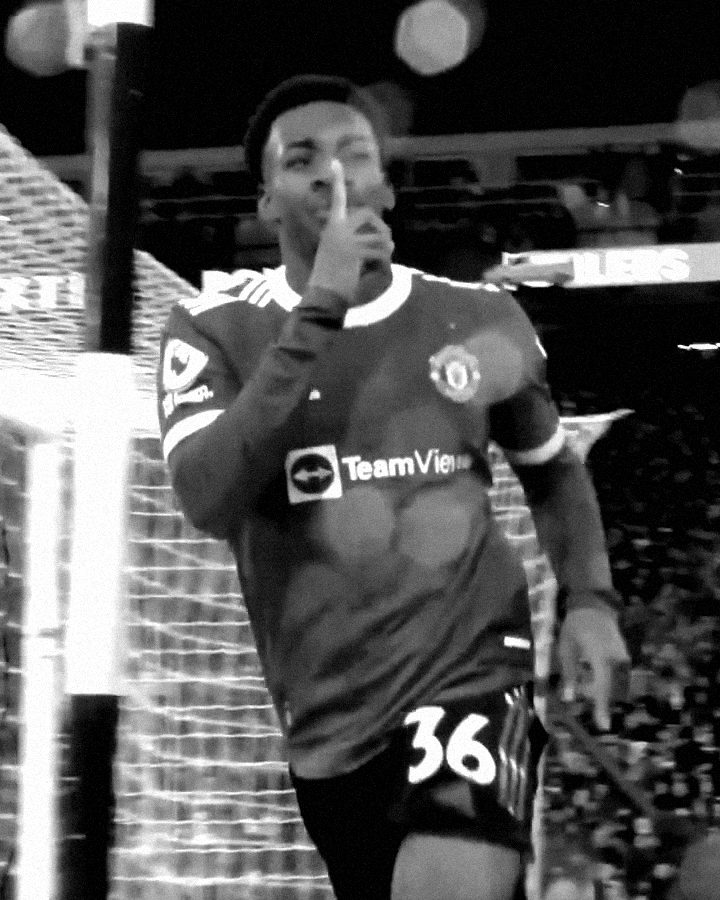

The Motion
Pace. Precision.Instinct.
Le mouvement en images : un film, des instants figés, et les grands soirs de sa carrière.
La vidéo n'a pas pu être chargée.
Le film
Manchester United, 2014 – 2023
- Durée
- 2 min 10
- Son
- Coupé par défaut
- Droits
- À confirmer
Les années Manchester United en images : l'académie, les débuts en équipe première et les premiers soirs européens.
Stills
Frozen speed.




Moments
The big nights.
- Premier but en Premier LeagueManchester United contre WolverhamptonVidéo sous licence à venir
- Le MetropolitanoBut égalisateur contre l'Atlético de Madrid, huitième de finale de Ligue des championsVidéo sous licence à venir
- Face à son ancien clubBut avec Nottingham Forest contre Manchester UnitedVidéo sous licence à venir
- Demi-finale de Coupe de la LigueBut avec Newcastle contre Manchester CityVidéo sous licence à venir
- Doublé au Camp NouNewcastle contre le FC Barcelone, Ligue des championsVidéo sous licence à venir
- Finale des barragesBut contre la Pologne, qualification de la Suède pour la Coupe du mondeVidéo sous licence à venir
- Coupe du mondeButs contre les Pays-Bas et le JaponVidéo sous licence à venir